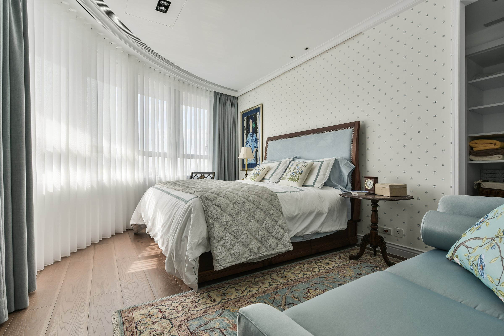
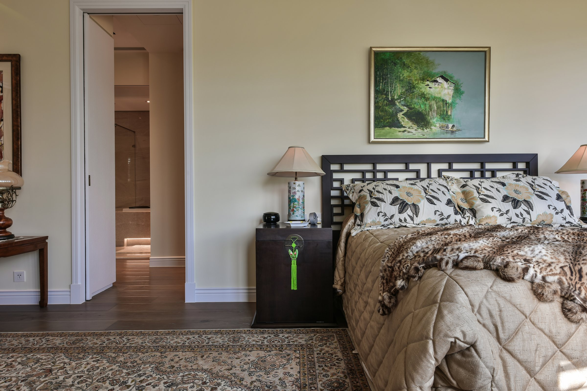

讓舊的東西定義新的空間，而不是反過來。
Letting old objects define the new space, not the other way around.


01
這個家的核心收藏是屋主多年蒐集的老件——手工雕花木門、清代屏風、波斯地毯、盆栽。設計的起點不是風格，而是一個問題：怎麼讓這些已經有故事的物件，在一個新空間裡繼續說話？
The heart of this home is the owner's collection gathered over many years — hand-carved wooden doors, Qing dynasty screens, Persian rugs, bonsai. The design starts not from style but from a question: how to let objects that already carry stories continue speaking in a new space?


02
玄關的收納櫃嵌入手工雕花老木門，新做的白色框體退到背景，讓木門的紋路和色澤成為走道的主角。波斯地毯從腳下延伸，把傳統工藝的密度帶進一個現代的平面裡。新與舊的交界不用過渡，直接並置。
Carved antique wooden doors are set into the entrance storage; new white frames recede, letting the wood's grain and patina command the corridor. A Persian rug extends underfoot, carrying the density of traditional craft into a modern plane. No transition between new and old — they are placed side by side.


03
客廳以傳統中式屏風作為空間的視覺焦點，藍色布面沙發與紅木傢俱並陳。這個配色不是「中式風格」的公式，而是屋主生活的真實反映——每一件傢俱都有來歷，設計的工作是讓它們在同一個空間裡不打架。
The living room uses a traditional Chinese screen as its visual anchor; blue upholstered sofa and rosewood furniture sit together. This palette is not a Chinese-style formula — it is the true reflection of the owner's life. Every piece of furniture has a provenance; the design work is making them coexist without conflict.
04
大理石地面的光澤度與老木件的啞光形成自然的對比。這個對比不是設計師製造的張力，而是時間的差距——新的材料會反光，老的材料吸收光。讓這個差距存在，而不是試圖統一它，才是這個家的設計態度。
The polished marble floor contrasts naturally with the matte patina of antique wood. This contrast is not designed tension — it is the gap of time. New materials reflect; old materials absorb. Letting this gap exist rather than trying to unify it is this home's design attitude.

05
這個家最終要說的是：收藏不需要展示廳，它需要的是一個日常。當雕花木門變成收納的門片、波斯地毯變成每天踩過的地面、盆栽在陽台上繼續生長——老件不再是被觀看的物品，而是生活的一部分。這才是收藏最好的歸宿。
What this home ultimately says is: a collection does not need a gallery — it needs a daily life. When carved doors become storage panels, Persian rugs become the floor you walk on every day, and bonsai keep growing on the balcony — antiques are no longer objects to be viewed but part of living. That is the best home a collection can find.
All Photos